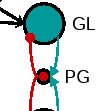

people

ricardo gutierrez-osuna
Assistant Professor,
Computer
Science
Director, Pattern Recognition & Intelligent Sensor Machines Lab
Director, Pattern Recognition & Intelligent Sensor Machines Lab
rgutier
 cs.tamu.edu, 979.845.2942
cs.tamu.edu, 979.845.2942
bright 520a
cs.tamu.edu, 979.845.2942
bright 520a
The goal of my research is to develop systems that sense, interact with, learn from and adapt to the environment under a number of modalities, including chemical, acoustic, visual, temporal and spatial. In the context of interface ecology, our interests focus on the combined use of pattern recognition models and sensors (e.g., physiological, audio, video) to understand what people do, model their experiences and associated states, and support affective multimodal interaction.